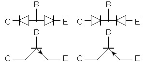

A tranzisztoroknak számos típusa létezik.Az egyik leggyakoribb, ún. bipoláris tranzisztort vizsgáljuk meg.Ilyen a rajz jele: 
A tranzisztor három kivezetéssel bír, úgymint bázis (Base), kollektor (Collector) és emitter (Emitter).
A konvencionális megközelítés szerint az áram a pozitív oldal felől a negatív irányba folyik,
így az NPN tranzisztor könnyen megtanulható:
Először legyen a tranzisztor erősítő. A bázisára 1 mA áramot csorgassunk és a kollektor emitter közt
folyjon az erősített áram. Az erősítése 50 és 500 közt lehet, típustól és kialakítástól függően: azaz 50..500 mA
közt várható az eredmény!
Fontos! Nem az írtam, hogy ennyit generál a tranzisztor, hanem ha a kollektor és az emitter közt
feszültségkülönbség van, akkor a bázisáram ennyiszerese folyhat maximum (túllépve a határt
a tranzisztor megsül)! Ami fontos, az a bázisba befolyó és a kollektor-emitteren folyó aránya!
Ez a dolog nem ennyire egyszerű. Hogy értendő az hogy ennyi áram folyik keresztül valamin?Ez még a
vízanalógia esetén sem működik, hogy ennyit kényszerítünk át a szűkületen! Víz esetén is csak a
nyomásra (magasságra, azaz villamosan: feszültségre) van hatásunk! Ezért fontos azt tisztázni, hogy ez az
"átfolyatható áram" ez egy maximális szint, azaz határérték! A tranzisztorok hálátlan, érzékeny jószágok.
Egy pici határérték túllépés és azonnal megemik a kalapjukat és kijön a működtető füst.
Nem olyan egszerű dolog valójában az áram szabályozása. Hiszen az ATMega chipen mit csinálunk?
Ki-/bekapcsoljuk a lábat illetve magas vagy alacsony feszültségszintre rakjuk! De hogyan lesz a
feszültségből áram?! - Ezt mondja ki az Ohm törvénye. Azaz használjunk ellenállást!
A bemenetre feszültséget kapcsolva, az R1 ellenálláson át megindul az áram. Ez persze nem nőhet az
égig, mivel az ellenállás lekorlátozza. A kollektor és a tápfeszültség közé is egy ellenállás került, mert
a tranzisztorral mégsem célünk a tápfeszültség és a GND rövidrezárása. Az ellenállás itt is határoló szerepet
tölt be.
De mekkora ez a limit? Ezt természesen a feszültség és az ellenállás határozza meg. De nézzük, hogyan:
A maximális áram, ami a bázison át folyik, nem lehet több az ellenállás miatt, mint 3.3 mA
(az Ohm-törvény alapján: I= U/R, azaz I= 3.3V / 1000Ω = 3.3mA)
A maximális áram a kollektor és az emitter közt akkor folyik, ha rövidzárként kapcsoljuk. Ez a 100Ω
ellenállás miatt azonban ahol 3.3V-os a tápfeszültség: 33mA.
Fontos! A méretezéskor a legrosszabb eset elvét követtük (worst case). Így a tranzisztorunk minden
körülmények közt életben marad.
Az elméleti tranzisztor így viselkedik. Azonban a gyakorlati egy picit másképpen. Az eddigi 3.3mA
bázisáram illetve 33mA kollektoráram az NPN tranzisztoron bemutatható volt. De nézzünk egy kis
gyakorlatot:
Mi történik, ha a bemeneten 0V (GND) van?
Mi történik, ha a bemenetre 3.3V-ot kapcsolunk:
Sikerült előállítanunk ezzel egy jelfordítót, mert ha a bemeneten 3.3V van, a kimeneten 0V és fordítva: ha
a bemeneten 0V, a kimeneten 3.3V!
| Rating | Symbol | BC 546 | BC 547 | BC 548 | Unit |
|---|---|---|---|---|---|
| Collector - Emitter Voltage | VCEO | 65 | 45 | 30 | Vdc |
| Collector - Base Voltage | VCBO | 80 | 50 | 30 | Vdc |
| Emitter - Base Voltage | VEBO | 6.0 | Vdc | ||
| Collector Current-Continuos | Ic | 100 | mAdc | ||
| Total Device Dissipation@Ta=25°C Derate above 25°C |
PD | 625 5.0 |
mW mW/°C |
||
| Total Device Dissipation@Tc=25°C Derate above 25°C |
PD | 1.5 12 |
Watt mW/°C |
||
| Operating and Storage Junction Temperature Range |
Tj,Tstg | -55 to +150 | °C | ||